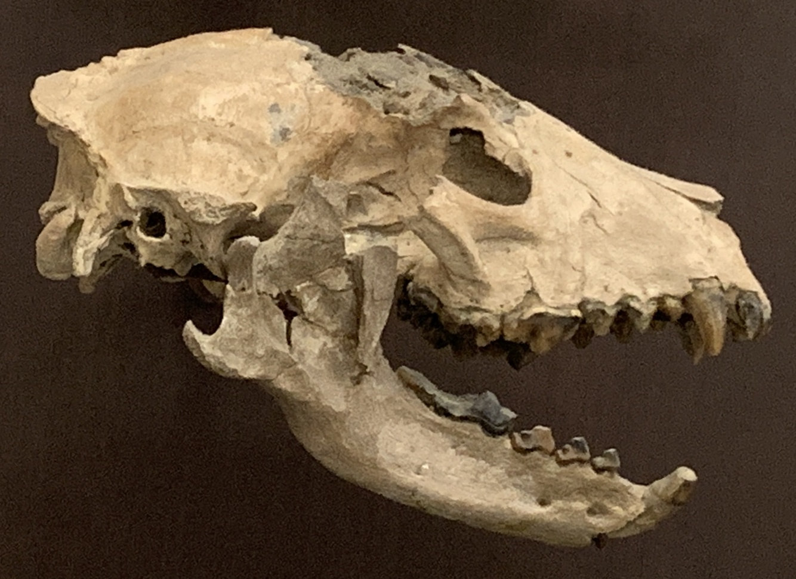

The earliest known ancestor of the Canidae family, Hesperocyon, lived in North America around 40 million years ago. As time passed, a larger species known as Tomarctus emerged, characterized by a skull similar to that of a modern wolf.

By Bloopityboop - Own work, CC BY-SA 4.0, https://commons.wikimedia.org/w/index.php?curid=150055557
Emergence
Around 2 million years ago, the first true gray wolf emerged. Then, they adapted to diverse environments and spread across various regions.
Nowaday Relatives
Nowadays, gray wolves and some other smaller Canis species, such as the coyote and the golden jackal, are still closely related, allowing them to produce fertile hybrids.